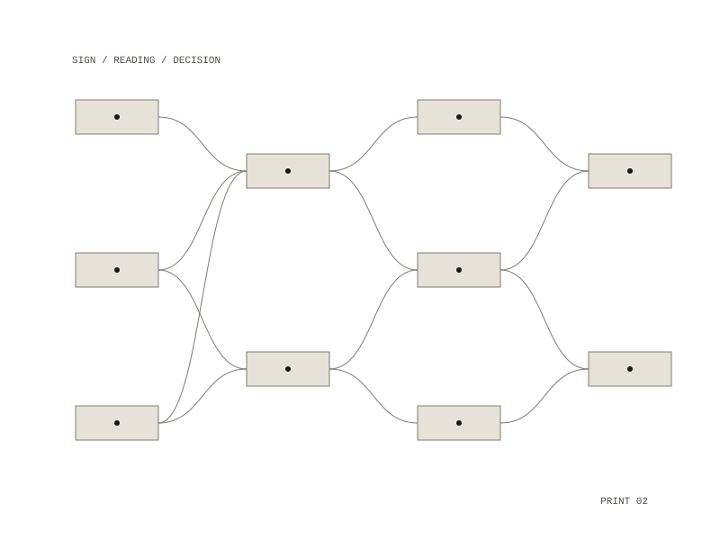

06 / project
Oracularity
Computation read back through divination and the tarot
An essay that reads computation back through divination: the earliest computing was interpretation, a tribe reading the flight of birds to make a decision, long before a theory of computation existed.

The argument
It sets two origins side by side. Interpretation begins when a decision has to be made from signs. Computation begins in 1936, with Turing's machine that decides yes or no for any computable problem. Between them it reads the tarot, starting from the Fool, alongside Walter Benjamin's chess-playing automaton and Derrida's Plato's Pharmacy.
Published in
Yale Journal of Technology and the Arts, 12(1)
from the Machine as Medium symposium, Yale CCAM
Yale Journal of Technology and the Arts, 12(1)
from the Machine as Medium symposium, Yale CCAM